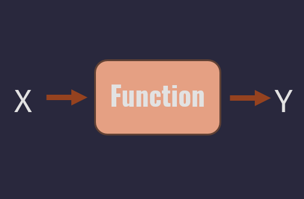
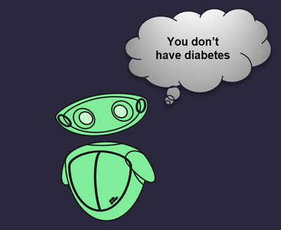

1. Machine-learning with python
To start with, the definetion of machine learning is the act of teaching a computer how to perform a task without explicitly programming it to accomplish this task. In ML, we feed data into an algorithm and gradually improve the outcome with experience. Technically, it's a mathematical algorithm that outputs a prediction.

Along side the course we are going to be building up our DIABETES DETECTOR ML MODEL using python programming langauge.
You can access Chapter I: Python ,from here
2. What is Data Science?
Us as humans, when learning we search for tutor, books, or researches... In other words we need data to learn from. Data science is the study of data to extract meaningful insights, it's about using scientific methods, processes, algorithms, and systems to extract knowledge and insights from data. You can consider it as the preparational step for building our ML model.
You can access Chapter II: Data Science ,from here
3. What is Supervised learning?
Now after preparing the dataset, it is time to train, test, then emhance the model. These three steps are done by different ways, one of them is supervised learning
Supervised machine learning algorithms learn from labeled data and we know what output to expect! In other words it is done with the interferance of human bieng.
You can access Chapter III: Supervised Learning ,from here
4. What is Unsupervised learning?
Another way of model training is unsupervised learning, it is giving the algorithm unlabled data and based on features; the algorithm learns patterns on its own. Lets take this example
If you are trying to sort the fruits it the above picture, you can sort them based on color, shape, or some features like having a leaf or not. This is what unsupervised learning does.
You can access Chapter IV: Unsupervised Learning ,from here
5. What is Deep earning?
Deep learning is a subset of machine learning, which is itself a part of artificial intelligence. It mimics the way humans learn and process information.
Deep learning is especially powerful for tasks involving large datasets and complex patterns, such as image and speech recognition, natural language processing, and autonomous driving. The key strength of deep learning is its ability to automatically learn representations from data without the need for manual feature extraction.
You can access Chapter V: Deep Learning ,from here
6. Diabetes Detector ML Model
Now after getting to know all of the essentials, it is time to build our diabetes detector model

You can access Diabetes Detector model ,from here